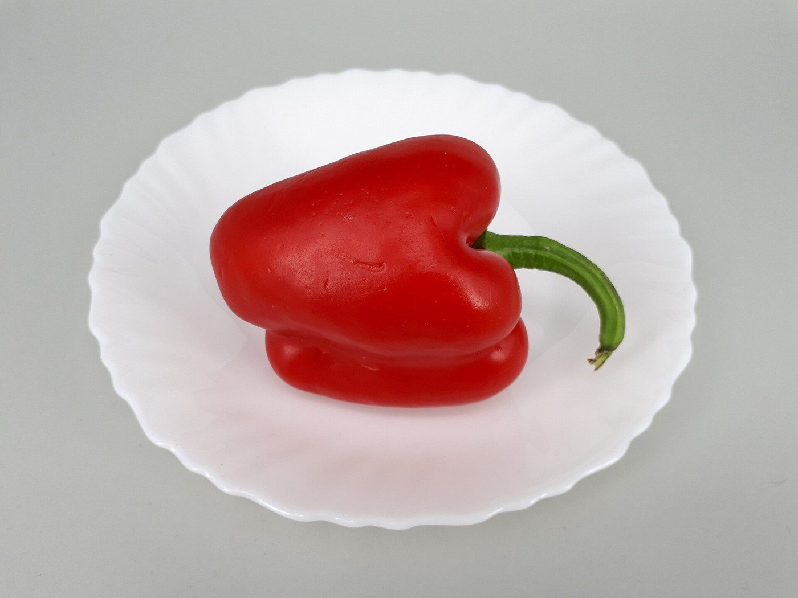

アクセス
場所のご案内
確認できているのは所在地とInstagramのみです。そのほかは準備中です。
| 所在地 | 〒292-0421 千葉県君津市久留里市場585 |
|---|---|
| 電話 | 準備中 |
| 営業時間 | 準備中 |
| 定休日 | 準備中 |
| ご予約 | 準備中 |
| 駐車場 | 準備中 |
| SNS | Instagram @cafe_tabiwo_suruki |
ギャラリー(イメージ)
パンの写真


写真はパンのイメージです。お店のものではありません。
ギャラリー(イメージ)
実りの写真


写真は果実と野菜のイメージです。お店のものではありません。